Aplicacions digitals
a mida per a empreses
Comunicació, criteri visual, intel·ligència artificial i desenvolupament amb codi al servei de processos concrets.
Què fem
Convertim processos en eines digitals útils
Som una agència de comunicació que ha incorporat la intel·ligència artificial i el desenvolupament amb codi al seu procés de treball. Això ens permet crear aplicacions a mida amb un objectiu molt clar: optimitzar i automatitzar processos per guanyar temps i treballar millor.
Detectem
Identifiquem els processos que fan perdre temps: tasques repetitives, dades difícils de llegir, fluxos de treball poc àgils.
Ordenem
Analitzem la informació i el procés real de cada empresa, i el repensem amb criteri visual i de comunicació.
Construïm
Desenvolupem una eina digital adaptada a aquell procés: visual, fàcil d'utilitzar i pensada per al dia a dia.
No venem un producte tancat: cada eina neix d'una necessitat concreta.
Per què ara
El que abans no era viable,
ara és possible
- Desenvolupar programari a mida exigia equips tècnics grans i pressupostos elevats.
- Les pimes s'adaptaven a eines genèriques que no encaixaven amb els seus processos.
- Moltes tasques es resolien amb Excels i feina manual.
- La IA, amb suport de codi, permet desenvolupar eines a mida en terminis i costos raonables.
- Cada eina s'ajusta al procés real de l'empresa, i no al revés.
- El resultat es trasllada directament a guanyar temps i a treballar amb dades més clares.
Nosaltres hi aportem el que una eina tècnica no porta de sèrie: criteri visual, claredat comunicativa i coneixement de com treballen les empreses.
Què podem transformar
Sis àmbits on una eina a mida canvia la feina
D'Excels a eines visuals
Dades que ja existeixen, presentades de manera clara, filtrable i fàcil d'interpretar.
Reports comercials
Informes setmanals que passen de fulls de càlcul a eines consultables des de qualsevol lloc.
Catàlegs digitals
El catàleg de tota la vida, amb carrusels, vídeos i enllaços, sempre actualitzat.
Aplicacions a mida
Webs i apps creades per a una necessitat concreta: un esdeveniment, un servei, un client.
Eines internes
ERPs i fluxos de treball personalitzats al màxim, decidint què passa a cada pas.
Automatització avançada
Processos que s'executen sols a partir d'una instrucció: edició, disseny, informes.
A les pàgines següents, exemples reals de cada àmbit.
De l'Excel a la visualització de dades
Les mateixes dades, una lectura molt més clara
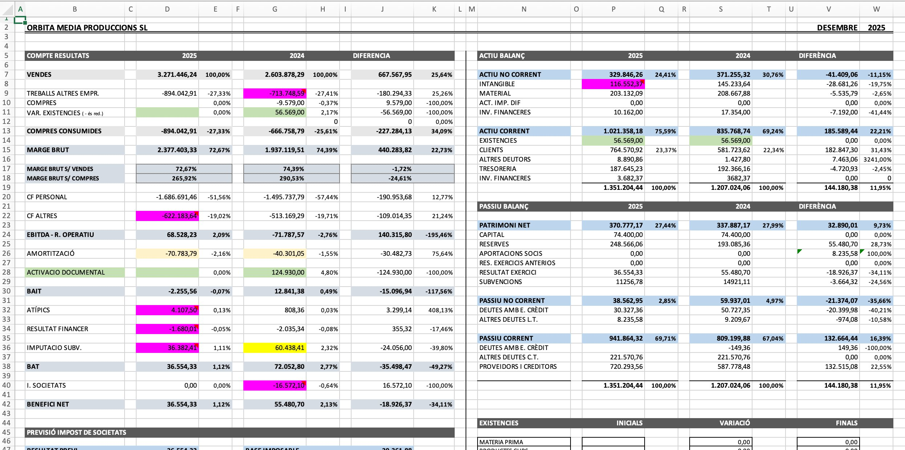
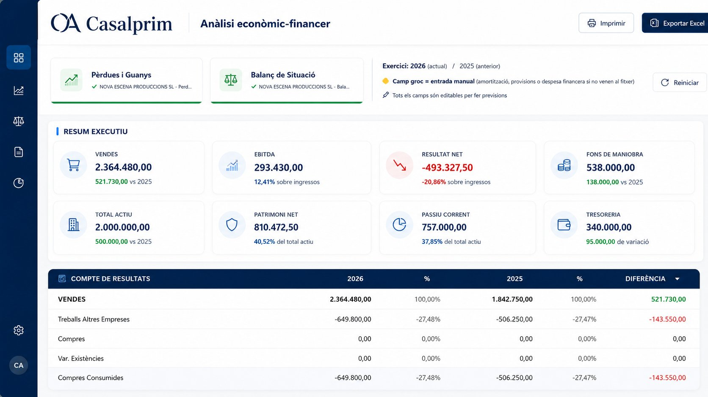
L'Excel amb què la gestoria presenta els resultats anuals de l'empresa.
La mateixa informació convertida en una aplicació d'anàlisi econòmic-financera.
Lectura més clara, dades més accessibles i millor presa de decisions, sense canviar la font d'informació.
Reports comercials més clars
Del report setmanal en Excel a una eina consultable
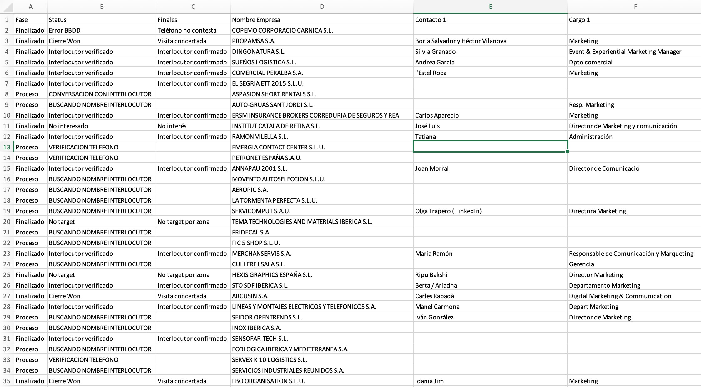
L'Excel que ens enviava cada setmana l'agència de telemàrqueting amb el seguiment de visites comercials.
Ara la mateixa informació és una eina web: fàcil d'interpretar, filtrar, presentar i utilitzar per prendre decisions comercials.
Veure la demo →Catàlegs digitals
El catàleg de sempre, ara viu
Un catàleg digital manté l'estructura del catàleg tradicional, però hi afegeix tot el que el paper no pot oferir:
- Carrusels de fotografies per a cada producte
- Vídeos integrats dins de la pàgina
- Enllaços a webs, fitxes i formularis
- Contingut sempre actualitzable
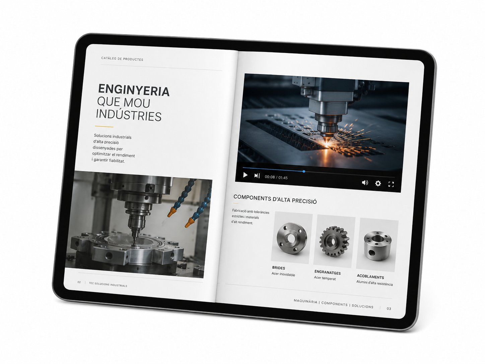
Aplicacions a mida
Family Day 2026 · Transgourmet
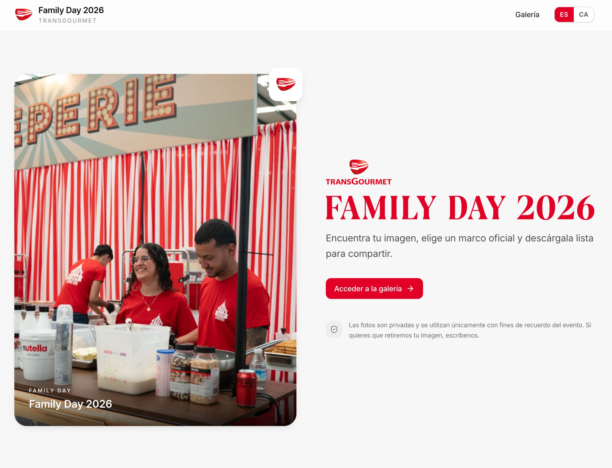
Galeria web on cada assistent troba la seva imatge, tria un marc oficial i se la descarrega a punt per compartir.
Una aplicació creada expressament per a un esdeveniment: el disseny, els marcs i la temàtica (circ, en aquest cas) són fets a mida.
Quan la necessitat és concreta, l'eina també ho pot ser.
Visitar l'aplicació →Eines internes per treballar millor
Ens hem fet el nostre propi ERP
Tot el que proposem, primer ho apliquem a casa. Hem creat el nostre sistema de gestió amb una personalització total dels fluxos de treball: decidim exactament què passa quan es marca cada opció.
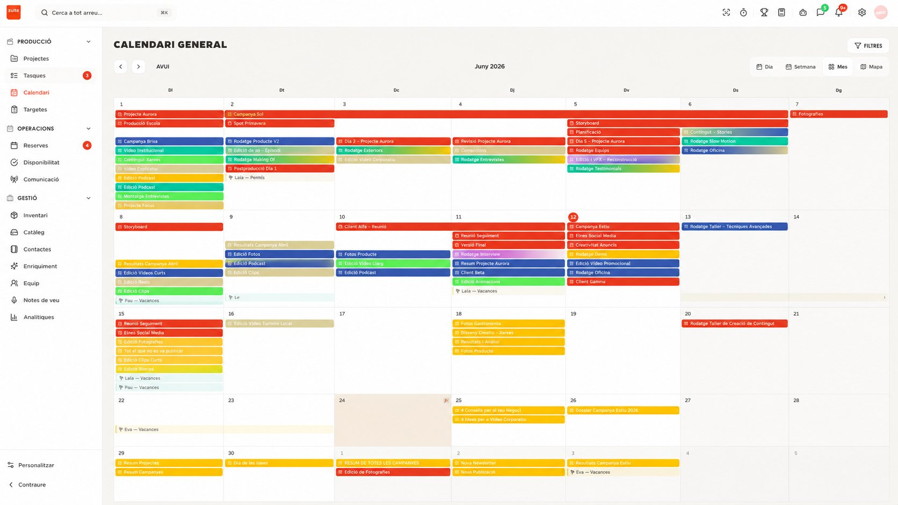
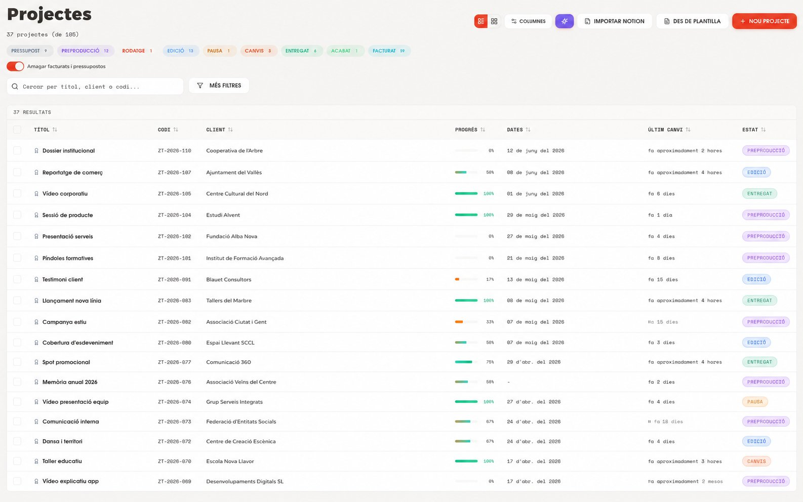
Calendari general de produccions, rodatges i edicions.
Gestió de projectes amb estats, progrés i clients en una sola vista.
Eines de creació amb IA
Generem animacions a partir d'un text
Ens hem construït una eina que no existia: crear animacions descrivint-les amb paraules. La que tens al costat n'és un exemple, generada així.
- Fins ara calia dominar programaris específics d'animació i hi havia setmanes de feina pel mig.
- Les IA generalistes (Claude, Gemini, ChatGPT) encara no hi arriben.
- Amb la nostra eina l'equip pot proposar i iterar molt més ràpid; el criteri estètic i de tractament hi continuen sent imprescindibles.
Animació generada amb la nostra eina, descrita amb un text.
Automatització avançada de processos
Programes que s'executen sols, a partir d'una ordre
Hem creat una eina que, connectada a la IA, dona ordres directament als programes professionals que utilitzem cada dia. Tot, escrivint una instrucció.
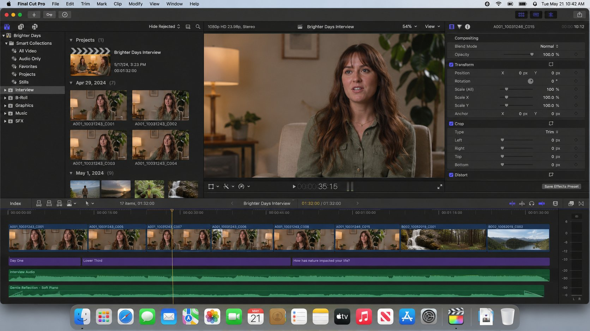
Edició de vídeo: en una entrevista, detecta automàticament les parts de l'entrevistat i les elimina del muntatge.
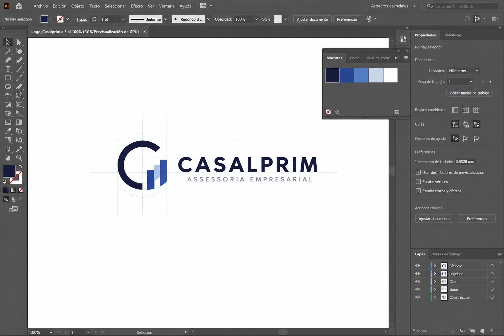
Disseny gràfic: obre Illustrator i construeix un logotip seguint les especificacions que li donem.
Projectes en què estem treballant
Una petita mostra de coses ben diferents
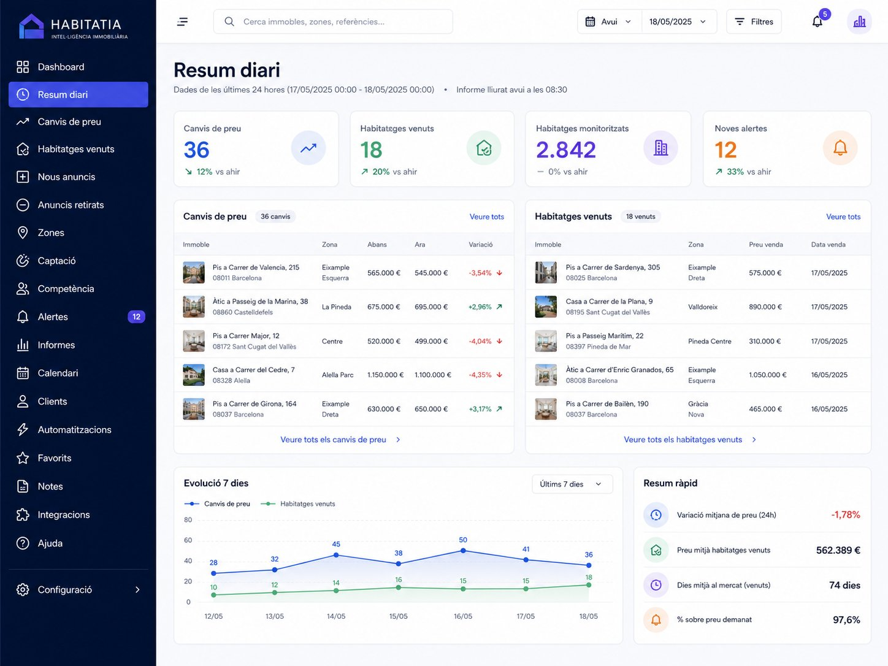
Seguiment diari d'un portal immobiliari
Cada dia, a la mateixa hora, una agència immobiliària rep totes les modificacions de les últimes 24 h: quins habitatges han variat de preu i quins s'han venut. Informació per afinar l'estratègia comercial.
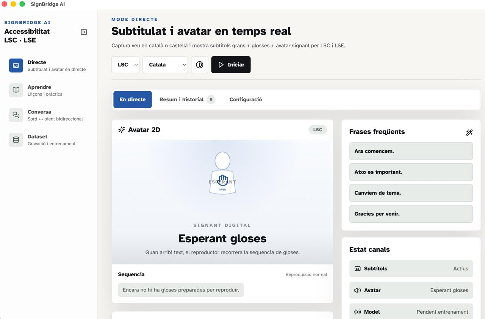
Aplicació de llengua de signes en català
Una eina que avui no existeix en català: estem entrenant el model per cobrir tot el vocabulari, amb detecció de mans en temps real.
Una eina per a cada necessitat
Si un procés us fa perdre temps,
segurament es pot transformar
Els exemples anteriors són només una mostra. Cada empresa té processos diferents, i per això no partim mai d'un producte tancat: partim de la vostra manera de treballar.
Comencem petit
Un procés concret, una eina concreta. Resultats visibles des del primer projecte.
Sense canviar-ho tot
Les eines s'adapten als sistemes i a la informació que ja utilitzeu.
Amb criteri visual
Cada eina es dissenya perquè sigui clara, agradable i fàcil de fer servir.
Estudiem cada procés i valorem quina eina podem crear.
Qui som
Una agència de comunicació
amb mirada digital
Som Zeba, una agència de comunicació amb seu a Olot que treballa per a empreses, institucions i col·lectius de tot Catalunya.
La nostra feina s'articula al voltant de tres pilars: la comunicació, la producció audiovisual i els esdeveniments. A partir d'aquí imaginem, creem i comuniquem cada projecte de cap a peus.